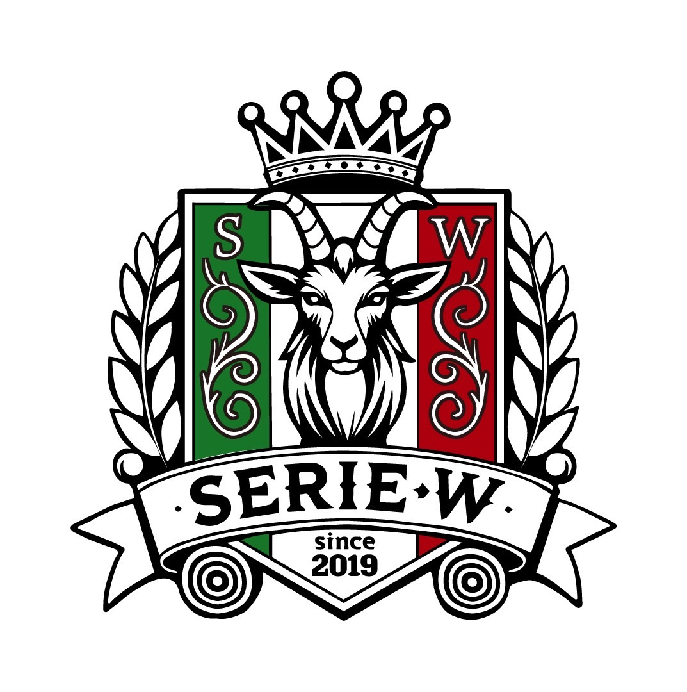

01ALL LEVELS
上手い、下手なんて関係ない。
経験ゼロでも、久しぶりでも大丈夫。勝ち負けより、みんなで気持ちよくボールを蹴ることを大切にしています。
BEGINNER & SOLO PLAYER WELCOME
上手い、下手なんて
関係ない。
ひとりで来ても、帰る頃には仲間。
大阪南部・和歌山方面で個サルを探している方へ。
WHO WE ARE

INDIVIDUAL FUTSAL COMMUNITY
SERIE W（セリエワー）は、泉佐野市を中心に泉州エリアで活動する個人参加型フットサルサークルです。大阪南部や和歌山方面で個サルを探している方も、初心者も経験者も、学生も社会人も。チームやレベルに縛られず、誰でも気軽に参加できる場所をつくっています。
THE SERIE W WAY
NO JUDGEMENT.
JUST FUTSAL.
経験ゼロでも、久しぶりでも大丈夫。勝ち負けより、みんなで気持ちよくボールを蹴ることを大切にしています。
チームに入っていなくても参加OK。毎回集まったメンバーでチームを組むから、初参加でも自然に混ざれます。
10代から50代まで、学生も社会人も参加中。年齢や所属を越えて楽しめる、南大阪の個サルコミュニティです。
COME & PLAY
WEEKEND FUTSAL
土日10:00〜20:00の間を中心に、泉佐野市オークアリーナで開催。最新スケジュールはLINEまたはInstagramでお知らせします。
3 EASY STEPS
YOUR FIRST KICK
開催予定や空き状況をLINEで確認します。
名前と参加希望日を送ればエントリー完了。
動きやすい服装とシューズを持って集合！
BEFORE YOU PLAY
QUESTIONS?
もちろんです。上手い・下手は関係ありません。初心者の方も安心して参加してください。
大歓迎です。SERIE Wは個人参加型なので、ひとりで気軽に参加できます。
10代から50代まで幅広い年代が参加しています。学生・社会人、男女問わず募集中です。
基本参加費は1名1,000円です。開催ごとの詳細はLINEでご確認ください。
READY TO JOIN?